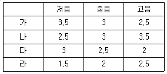

피아노조율기능사 (2002-07-21 기출문제)
1과목: 임의 구분
1. 이중교차식 현은 처음 누가 창안했는가?
- 스타인웨이
- 베슈타인
- 칙커링
- 토마스라우드
(정답률: 알수없음)

2. 현의 진동수는 현의 질량과 길이에 어떠한가?
- 모두 비례 한다.
- 질량에는 비례하고 길이에는 반비례 한다.
- 모두 반비례 한다.
- 질량에는 반비례하고 길이에는 비례한다.
(정답률: 알수없음)
3. 목골과 관계 없는 것은?
- 업라이트 피아노는 수직 기둥과 상하 굵은 횡목으로 짜여져 있다.
- 목재는 고로쇠, 구루미 등이 사용된다.
- 업라이트 피아노는 굵은 내·외림(rim)에 방사선 각목으로 짜여져 있다.
- 20톤의 장력을 버티는데 보조해 준다.
(정답률: 알수없음)
4. 피아노선 23번의 굵기가 1.30 ± 0.015mm이다. 21번선의 굵기는?
- 1.125 ± 0.013mm
- 1.175 ± 0.013mm
- 1.150 ± 0.015mm
- 1.225 ± 0.015mm
(정답률: 알수없음)
5. 액션의 해머 생크에 가장 적합한 수종과 지름은?
- 단풍나무, 5.8 mm - 6.0 mm
- 나왕, 2.0 mm - 3.0 mm
- 미송, 10 mm - 15 mm
- 스프루스, 10 mm - 14 mm
(정답률: 알수없음)
6. 향봉의 구조 중 끝부분이 활 모양으로 얇게 성형 된 가장 큰 이유는?
- 뒷면의 미관을 위하여
- 향판의 재질이 딱딱하므로 쉬운 조립을 위해서
- 돌림목에 향판이 쉽게 조합될 수 있게 하기 위하여
- 향판 크라운의 탄성을 증대시켜 진동의 효과를 극대화시켜주기 위하여
(정답률: 알수없음)
7. 아래 문장은 플렌지에 관한 설명이다. 이중 틀린 것은?
- 위펜에는 잭플렌지가 부착되어 있다.
- 플렌지는 위펜, 받드에도 부착되어 있다.
- 업라이트 댐퍼용 플렌지에는 실코드가 부착되어 있다.
- 댐퍼기구에는 플렌지가 부착되어 있지 않다.
(정답률: 알수없음)
8. 피아노 발달사에 대한 내용 중 그 연대가 가장 빠른 것은?
- 스타인웨이 업라이트피아노 제작
- 에라르, 아그라프 발명
- 타현거리를 좁히는 소프트 페달 출현
- 에라르, 최초로 레퍼티션 액션 완성
(정답률: 알수없음)
9. 조율핀이 갖추어야 할 조건으로 옳은 것은?
- 길이는 60mm 이하이어야 한다.
- 조율핀이 박히는 부분에는 30-35mm의 나사산을 가공하여야 한다.
- 지름은 6.5mm 이하이어야 한다.
- 지름은 7.5mm 이상이어야 한다.
(정답률: 알수없음)
10. 댐퍼레버를 직접 움직이게 하는 부품의 명칭은?
- 댐퍼로드
- 링크레버
- 페달 스프링
- 댐퍼페달 레버
(정답률: 알수없음)
11. 등자뼈는 귀의 어느 부분에 해당하는가?
- 내이
- 외이
- 중이
- 귀바퀴
(정답률: 알수없음)
12. 청각 가청한계 식별력의 최소와 최대차는?
- 50dB정도
- 60dB정도
- 70dB정도
- 80dB정도
(정답률: 알수없음)
13. 단3도인 F33은 174.614 Hz이고, G#36은 207.652 Hz이다. 두음 사이의 맥놀이 수는?
- 8.424
- 9.424
- 10.424
- 11.424
(정답률: 알수없음)
14. A49 음이 440Hz일 때 파장은? (단, 음속 340 m/s)
- 0.77 m
- 1.29 m
- 100 m
- 149600 m
(정답률: 알수없음)
15. 음파란?
- 발음체의 진동으로 생기는 공명의 굴절
- 발음체의 진동수가 서로 엇갈리는 물체
- 발음체의 진동으로 생기는 공기의 물결
- 발음체의 공명으로 서로 맞닿는 공기의 저항
(정답률: 알수없음)
16. 음향학적인 주파수를 나타내는 식은?
- 주파수=파장/음속
- 주파수=주기/음속
- 주파수=음속/파장
- 주파수=진폭/파장
(정답률: 알수없음)
17. 악음(樂音)의 3가지 특성에 관한 설명이다. 맞는 것은?
- 연속성, 지속성, 명료성
- 연속성, 지속성, 쾌락성
- 연속성, 명료성, 활발성
- 연속성, 활발성, 쾌락성
(정답률: 알수없음)
18. 인간이 물리적으로 일정한 강도에서 가장 강하게 느끼는 것은 몇 Hz정도인가?
- 200Hz
- 440Hz
- 3000Hz
- 5000Hz
(정답률: 알수없음)
19. 어느 한계 내에서는 나중에 귀에 도달한 소리가 처음 도달하는 방향에서 오는 것 같이 느끼는 현상을 무엇이라 하는가?
- 도플러 현상
- 음의 선행효과
- 매스킹 효과
- 음의 방향 감각
(정답률: 알수없음)
20. 바란스 홀 크로스를 교환할 때 크로스는 어느 정도 크기로 절단해야 하는가?
- 폭 11mm, 길이 10mm
- 폭 5mm, 길이 15mm
- 폭 9mm, 길이 30mm
- 폭 4mm, 길이 50mm
(정답률: 알수없음)
2과목: 임의 구분
21. 순정율 화음에 대한 음정 비율이 옳게 나열된 것은?
- 단3도 - 4:5
- 장3도 - 5:6
- 단6도 - 3:5
- 장10도 - 2:5
(정답률: 알수없음)
22. 평균율에 있어서 4도, 5도, 장3도, 장6도 음정은 순정조보다 몇 센트 차이가 나는가?
- 4도:+2, 5도:-2, 장3도:+14, 장6도:+16
- 4도:-2, 5도:+2, 장3도:+4 , 장6도:+6
- 4도:-2, 5도:+2, 장3도:+14, 장6도:+16
- 4도:+2, 5도:-2, 장3도:+4 , 장6도:+6
(정답률: 알수없음)
23. 대전음과 소전음 즉 큰온음과 작은온음의 차이가 없고 반음이 매우 좁으며 장3도가 많이 어긋나는 조율방법은?
- 피타고라스음률
- 순정률
- 중간가감률
- 평균가감률
(정답률: 알수없음)
24. C28에서 위로 장3도 E32의 맥놀이수는? (단, C28의 진동수 130.813Hz, E32의 진동수 164.814Hz)
- 0.590
- 5.191
- 28.810
- 136.004
(정답률: 알수없음)
25. 순정음률에서 대전음 즉 큰 온음에 해당하지 않는 것은?
- 도와 레
- 파와 솔
- 솔과 라
- 라와 시
(정답률: 알수없음)
26. 평균율적 반음의 넓이는 몇 센트인가?
- 200
- 150
- 100
- 50
(정답률: 알수없음)
27. 순정율에서 완전 4도는 몇 센트인가? (단, 평균율 4도 500센트)
- 496
- 498
- 502
- 504
(정답률: 알수없음)
28. 음파에 대한 설명으로 옳지 않는 것은?
- 음파는 공기나 액체, 고체에도 전해 퍼진다.
- 온도, 밀도가 일정할 때는 큰 음이나 높은 음이나 속도는 변하지 않는다.
- 기체일 경우 음의 속도는 기체 밀도의 평방근에 비례한다.
- 공기의 소밀파도 음파라고 할 수 있다.
(정답률: 알수없음)
29. 잔향시간에 대한 올바른 설명은?
- 방의 용적에 비례하고 전흡음량에 반비례한다.
- 방의 용적에 반비례하고 전흡음량에 비례한다.
- 방의 용적과 전흡음량에 비례한다.
- 방의 용적과 전흡음량에 반비례한다.
(정답률: 알수없음)
30. 다음 악기 중에서 연주 중 비부라토를 사용할 수 없는 악기는?
- 바이올린
- 첼로
- 비올라
- 피아노
(정답률: 알수없음)
31. 좋은 하모니와 관계있는 설명은?
- 여러가지 음이 동시에 울릴 때 아름다운 것
- 한가지 음이 강약으로 들리는 것
- C음과 B음이 동시에 들리는 것
- 한음으로 장단을 맞추는 것
(정답률: 알수없음)
32. 조율자세로 가장 바람직한 튜닝해머 각도는?
- 저음-수직, 중음-수직, 고음-수직
- 저음-수직, 중음-45° , 고음-45°
- 저음-45° , 중음-수직, 고음-수직 또는 20°
- 저음-약 30° , 중음-수직 또는 약간우측, 고음- 수직 또는 약간좌측
(정답률: 알수없음)
33. 해머를 찌르는데 사용하는 공구는?
- 니들 피커
- 핀홀 어드자스터
- 와이어 리프터
- 스크류 홀더
(정답률: 알수없음)
34. 렛오프를 조정하는 공구는?
- 댐퍼 레규레이터
- 백첵 레규레이터
- 댐퍼 스푼 벤더
- 레규레이팅 스크류 드라이버
(정답률: 알수없음)
35. 다음은 소리의 굴절에 관한 설명이다. 옳지 않은 것은?
- 소리의 굴절현상은 지표면의 공기온도와는 관계가 없다.
- 굴절이란 소리의 전달방향이 바뀌는 현상을 말한다.
- 지표근처에서는 바람의 반대 방향으로 전파되는 소리는 위쪽으로 굴절한다.
- 굴절 현상은 음파가 통과될 어떤 매체의 변화에 의해 발생한다.
(정답률: 알수없음)
36. 건반 동작 검사방법 중 틀린 것은?
- 후론트, 밸런스홀이 뻑뻑할 경우는 키플라이어로 약간 넓혀준다.
- 밸런스홀이 약간 넓을 때는 물방울을 떨어뜨려 좁혀준다.
- 건반을 10mm정도 들었다가 놓으면 빠르게 내려가야 한다.
- 댐퍼압력을 분리한 상태에서 건반을 눌렀을 때 잘 올라와야 한다.
(정답률: 알수없음)
37. 건반 하나가 높을 때의 조정 방법은?
- 건반 밑을 알맞게 깍아낸다.
- 건반 뒷부분을 고인다.
- 건반 밸런스 클로스를 누른다.
- 밸런스 핀의 종이 펀칭을 빼낸다.
(정답률: 알수없음)
38. 높이 131cm 피아노의 건반의 깊이를 9∼10mm로 했을 때 해머의 스톱 거리는 얼마가 적당한가?
- 5∼9mm
- 9∼10mm
- 13∼15mm
- 18∼20mm
(정답률: 알수없음)
39. 가라 앉은 음향판 수리 방법은?
- 브리지를 약간 높인다.
- 후레임을 약간 낮춘다.
- 향판 뒤에서 뻗힌다.
- 후레임, 향판을 분해하고 돌림목을 약간 깎아 낮추고 조립한다.
(정답률: 알수없음)
40. 렛오프 스크류(Let off screw)조정의 가장 큰 목적은?
- 해머 스톱
- 해머 접근거리
- 해머 진행상태
- 해머 운동원활
(정답률: 알수없음)
3과목: 임의 구분
41. 레규레이팅 버튼(button)과 잭의 정점이 어느 곳에 닿는 것이 좋은가?
- 버튼 뒷부분에 잭의 정점이 닿아야 한다.
- 버튼 중앙에 잭의 정점이 닿아야 한다.
- 어디에 닿아도 상관없다.
- 버튼 중앙앞에 잭의 정점이 닿아야 한다.
(정답률: 알수없음)
42. 건반을 치고 놓을 때 받드 펠트 부위에서 잡음이 난다. 그 주된 원인은?
- 받드 스킨이 나쁘다.
- 머리 부분이 나쁘다.
- 받드(Butt) 펠트(felt)가 너무 단단하다.
- 스킨과 받드 펠트가 직접 접착 되었다.
(정답률: 알수없음)
43. 페달의 상하동작 거리가 많을 때의 처리 방법 중 가장 적합한 것은?
- 페달 나비너트(nut)를 늦추어 알맞게 조정한다.
- 클로스를 페달 밑판에 알맞는 것으로 붙인다.
- 클로스를 페달 천정에 알맞는 것으로 붙인다.
- 클로스를 토대목 페달 닿는 부분에 알맞는 것으로 붙인다.
(정답률: 알수없음)
44. 소프트 페달을 밟았을 때 해머 전체가 진행하게 되는데 타현거리와는 어느 정도가 적당한가?
- 1/2
- 1/3
- 1/4
- 1/5
(정답률: 알수없음)
45. 해머받드 플랜지가 뻑뻑할 때 처리방법 중 가장 좋지 않은 작업 방법은?
- 플랜지 붓싱 클로스를 조금 넓혀준다.
- 플랜지 붓싱에 실리콘을 투여한 후 열을 가해준다.
- 받드 플레이트 스크류를 조금만 풀어준다.
- 센터핀을 한번호 적은 것으로 교환한다.
(정답률: 알수없음)
46. 밸런스핀 홀을 스무스하게 넓히는데 사용되는 공구는?
- 핀홀 어드자스터(pinhole adjuster)
- 니들 피커(needle picker)
- 스크류 홀더(screw holder)
- 리머(reamer)
(정답률: 알수없음)
47. 피아노를 연주할 때 강한음이 발생하는데 그 음을 약하게 하는 방법은?
- 해머를 픽커링한다.
- 해머를 화일링 해 준다.
- 해머에 경화제를 발라준다.
- 해머에 아세톤을 발라준다.
(정답률: 알수없음)
48. 상아로 된 건반의 작업 방법 중 옳은 것은?
- 상아건반 표백은 컴파운드나 샌드페이퍼로 갈아낸다.
- 상아건반을 떼어 낼 때는 물기있는 수건을 올려 놓고 다리미에 열을 가한 후 떼어낸다.
- 상아건반 접착시에는 백건반(아크릴라이트) 붙이는 접착제로 붙인다.
- 상아건반 표백은 과산화수소수를 바른 후 반드시 음지에서 말린다.
(정답률: 알수없음)
49. 밸런스 붓싱 클로스 교체시 붓싱이 밀려 들어가 건반 동작이 둔하게 된 이유는?
- 아교가 너무 희석이 되어서
- 접착시 쐐기를 끼울 때 밖에 나온 클로스를 꼭 누르지 않고 쐐기를 끼웠기 때문
- 접착제가 너무 굳어서
- 쐐기가 너무 헐거워서
(정답률: 알수없음)
50. 백첵 와이어와 브라이들 테이프와의 간격은 어느 정도가 적당한가?
- 4.5mm
- 3.5mm
- 2.5mm
- 1.5mm
(정답률: 알수없음)
51. 점핑핀(Jumping pin)의 수리방법으로 가장 옳은 것은?
- 실리콘유를 칠한다.
- 핀 구멍에 물칠을 한다.
- 핀의 나사면에 백묵 칠을 하여 박는다.
- 핀을 빼서 기름칠을 해서 박는다.
(정답률: 알수없음)
52. 건반에서 잡음이 날 때의 경우이다. 틀린 것은?
- 후론트핀이 휘어져 있다.
- 흑건 후론트 붓싱이 옆으로 빠져나와 있다.
- 건반납이 느슨하게 되어 있다.
- 백건 아크릴 접착이 떨어져 있다.
(정답률: 알수없음)
53. 피아노 케이스에서 잡음이 발생하지 않는 곳은?
- 지주
- 위 뚜껑
- 경첩
- 상판
(정답률: 알수없음)
54. 업라이트 피아노 조정시 렛 오프(Let off)의 거리는 (mm)?

- 가
- 나
- 다
- 라
(정답률: 알수없음)
55. 해머 니들링(needling)에 관한 사항 중 옳은 것은?
- 신품인 경우에는 많은 횟수(500회 정도)를 찌르면 안된다.
- 많이 사용하는 해머는 니들링이 필요 없다.
- 바늘이 길며 한개인 피커는 대부분 깊숙히 찌르는데 필요하다.
- 니들링 후에는 화일링 작업이 필요 없다.
(정답률: 알수없음)
56. 많이 타현된 해머헤드(Hammer head)의 선단에는 깊고 길게 강선자국이 생겨 접현 면적이 늘어나므로 음질이 저하된다. 이것을 수리하는 방법으로 적합한 것은?
- 화일링(filing)
- 니들링(needling)
- 도우핑(Doping)
- 보이싱(Voicing)
(정답률: 알수없음)
57. 페달기구 수리에 관한 사항 중 옳은 것은?
- 페달 스프링에서 잡음이 날 경우는 스프링을 빼어 버린다.
- 페달이 토대목 옆면에 닿을 때는 페달을 옆으로 휘어 놓는다.
- 페달봉에 페달로드펀칭을 고일 때에는 페달운동 거리를 감안하여 적당한 두께로 고인다.
- 페달봉과 후레임이 닿아 잡음이 날 경우에는 페달봉을 휘어 놓는다.
(정답률: 알수없음)
58. 건반에서 잡음이 날 때에 제거하는 방법 중 옳지 않은 것은?
- 캡스턴 와이어가 휘어 옆에 닿는지를 살펴본다.
- 건반에 박힌 납을 모두 빼어 놓는다.
- 건반에 박힌 납을 두드려 넓혀준다.
- 건반의 후론트 핀홀이 헐거워졌는가를 살펴본다.
(정답률: 알수없음)
59. 건반 동작이 원활치 않을 때는?
- 밸런스 후론트 구멍을 키플라이어로 적당히 넓혀준다.
- 밸런스 핀을 뽑아서 박힌 위치를 옮겨 준다.
- 캡스턴 버턴을 아래위로 올려 조정한다.
- 브라이들 와이어를 좌우로 구부려서 조정한다.
(정답률: 알수없음)
60. 피아노 주변에서 잡음이 가장 많이 날 수 있는 조건인 것은?
- 피아노 옆의 책
- 느슨해진 쇠창틀
- 단추가 많은 옷
- 피아노 위의 천으로 된 인형
(정답률: 알수없음)